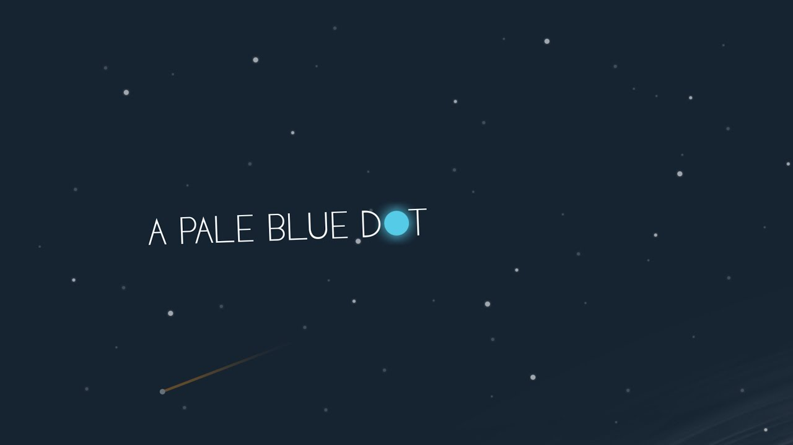

Я открою этот список книгой Карла Сагана, потому что именно она лежала на моем столе в тот момент, когда я искала тему для работы и именно она повторно вдохновила меня вспомнить об увлеченности космосом и создать эту библиотеку.

Научные
- Карл Саган
- Голубая точка. Космическое будущее человечества
- Стивен Хоккинг
- Краткая история времени

Фантастические
- Фрэнк Герберт
- Дюна
-
Роберт Хайнлайн
- Чужак в стране чужой
- Кукловоды
- Двойная звезда
-
Ричард Морган
- Видоизмененный углерод
- Сломленные ангелы
- Пробуждение фурии
-
Рэй Бредбери
- Марсианские хроники
-
Шон Дэнкер
- Адмирал
-
Энди Вейер
- Артемида
- Марсианин
-
Сергей Лукьяненко
- Танцы на снегу
Данный список составлен из прочитанных мной книг и будет дополняться.